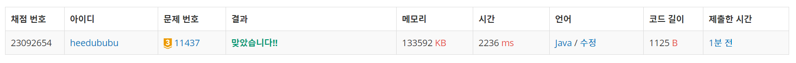

👀 문제
https://www.acmicpc.net/problem/11437
👊 도전
1. 설계
- ArrayList<>를 이용하여 트리를 만든다.
- 각 노드 별 depth, parent를 구한다.
- 가장 가까운 공통 조상을 찾는다.
2. 구현 (성공 코드)
1
2
3
4
5
6
7
8
9
10
11
12
13
14
15
16
17
18
19
20
21
22
23
24
25
26
27
28
29
30
31
32
33
34
35
36
37
38
39
40
41
42
43
44
45
46
47
48
49
50
51
52
53
54
55
56
57
58
59
60
61
62
63
64
65
66
67
68
import java.util.*;
/**
* @author HEESOO
*
*/
class Main {
static int n;
static ArrayList<ArrayList<Integer>> list;
static int[] depth, parent;
public static void main(String[] args) {
Scanner sc=new Scanner(System.in);
n=sc.nextInt();
// 트리 생성
list=new ArrayList<>();
for(int i=0;i<=n;i++) {
list.add(new ArrayList<Integer>());
}
for(int i=0;i<n-1;i++) { // 나와 연결된 노드를 저장
int a=sc.nextInt();
int b=sc.nextInt();
list.get(a).add(b);
list.get(b).add(a);
}
// 깊이, 부모 찾기
depth=new int[n+1];
parent=new int[n+1];
dfs(1,1);
int m=sc.nextInt();
for(int i=0;i<m;i++) {
int a=sc.nextInt();
int b=sc.nextInt();
System.out.println(solve(a,b)); // 공통 부모 찾기
}
}
public static void dfs(int node, int cnt) {// node: 방문 노드, cnt: 현재 깊이
depth[node]=cnt;
for(int child:list.get(node)) { // node와 연결된 것들 중에
if(depth[child]==0) { // 깊이 계산이 안 된 곳은 자식 노드이므로
dfs(child, cnt+1);
parent[child]=node;
}
}
}
public static int solve(int a, int b) {
// 같은 층으로 만들기
while(depth[a]>depth[b]) { // a가 더 밑에 있다면
a=parent[a];
}
while(depth[a]<depth[b]) { //b가 더 밑에 있다면
b=parent[b];
}
// 같은 층인데 같지 않다면(부모가 다르다면)
while(a!=b) { // 같은 부모를 찾을 때 까지 반복
a=parent[a];
b=parent[b];
}
return a;
}
}
3. 결과
 🤟 성공 🤟
4. 설명
- LCA
- LCA(Lowest Common Ancestor): 가장 가까운 공통 조상을 찾는다.
- ArrayList를 이용하여 트리를 만든다
- BST가 아니므로 자식 노드가 몇 개가 될 지 모른다. 따라서 ArrayList를 이용해야 한다.
- 서로 연결된 노드들을 ArrayList에 저장한다. list.get(1)은 노드 1와 연결되어 있는 노드들이 저장된다.
- 자식 노드들만 저장하는 것이 아니라, 나와 연결된 노드를 저장한다.
- 노드는 1부터 시작하므로 ArrayList<>는 총 n+1개를 만들고, list.get(0)은 사용하지 않는다.
- 깊이, 부모를 계산한다
- depth[i]는 i 노드의 깊이가, parent[i]는 i의 부모 값이 저장된다.
- DFS를 이용하여 깊이를 계산한다. depth, parent[] 배열을 이용하여 값을 저장한다.
- dfs()는 깊이 계산이 되지 않은 곳만 넣는다. depth[i]==0인 곳이 계산 안 된 곳이며, i의 자식노드이다. 따라서 재귀 호출을 통해 자식 노드로 이동하며, cnt+1을 통해 깊이를 계산한다.
- 자식 노드의 경우 parent는 node가 되므로 이를 저장한다.
- 깊이를 같게 만든 후, 가장 가까운 공통 조상을 찾는다
- solve()를 통해 깊이를 같게 만든 후 가장 가까운 공통 조상을 찾는다.
- a와 b의 depth를 확인한다. 다를 수가 있으므로 더 깊은 곳을 한 칸씩 위로 올라가며 기준으로 같게 만든다.
- 첫 번째 while문은 a가 더 깊은 경우로, a=parent[a]하며 올라간다.
- 두 번째 while문은 b가 더 깊은 경우다.
- a와 b의 깊이 같아지면 세 번째 while문의 조건을 확인한다. 깊이가 같고 a==b이면 공통 조상을 가리키고 있는 것이다. a!=b라면 깊이는 같지만 공통 조상이 아니므로 같이 한 칸씩 위로 올라가며 공통 조상을 찾을 때 까지 반복한다.
- 공통 조상 a를 리턴한다(b도 가능).
👏 해결 완료!
참고
- [BOJ] 백준 11437번 LCA 자바 풀이 https://hoho325.tistory.com/103